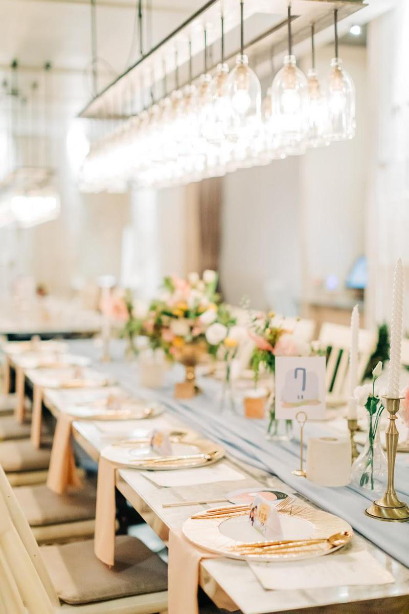
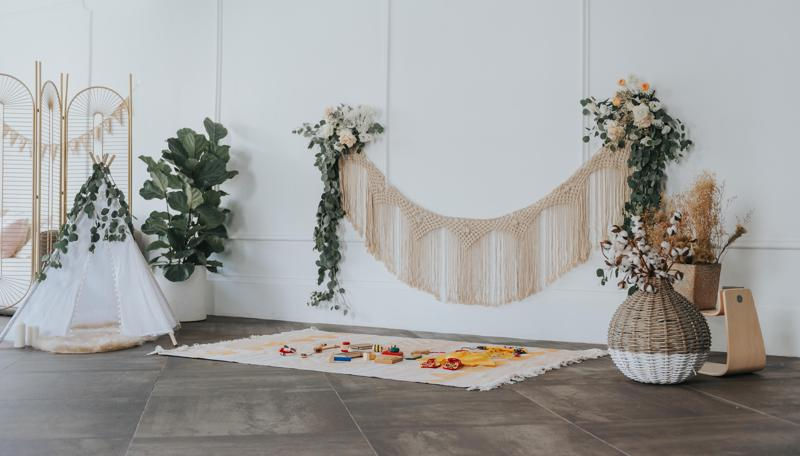

拾夢西式婚禮顧問服務項目
-

全包式婚顧服務
從下訂服務那刻起，將會有一位新人專屬的婚禮規劃師，包辦所有關於婚禮的大小事務，作為與各廠商溝通的統一窗口，並在婚禮當天為您的婚禮完美場控。
籌備期服務包含：協尋婚禮場地、廠商、婚禮廠商溝通與協調、規劃及提醒籌備進度、婚禮用品規劃代購、安排動線規劃、流程規劃、活動設計、音樂設計等。
想要讓繁瑣的婚禮籌備過程變得簡單，就選擇婚顧服務輕鬆打造夢想婚禮吧！DCT planner coordinates all the nitty-gritty details including managing budget, vendors, venues..etc. We are the liaison between all the vendors and the bride/groom. Being committed to create an amazing wedding experience is our mission.
預約拾夢 -
純場控婚企服務
純場控婚企服務 我們將在婚禮前3個月開始為您規劃婚禮當天的活動流程，並在婚禮當天為您的婚禮完美場控。
籌備期服務包含：流程時間規劃、活動設計、音樂設計。
如果你是喜歡親自規劃溝通、已安排好婚禮廠商的新人，就選擇婚企方案，讓專業的團隊將你們的理想婚禮順利實現吧！Wedding Emcee specialized in creating the entire vibe and atmosphere of the wedding ceremony. Let us help you customizing your own and memorable wedding !
預約拾夢 -

婚禮佈置
一場完美的婚禮，除了擁有最美的人之外，花藝佈置是營造氛圍最重要的元素。從拱門設計、捧胸花、Candy Bar 到室內的收禮拍照區、桌花設計等，拾夢皆採客製化設計。依照新人喜愛的色系及樣式，進行詳細的提案與討論。讓您的婚禮，擁有自己的主題。
Floral design and decoration not only make a perfect wedding, they also showcase the couples' warmth & authenticity. From designing the wedding arch, to centerpiece, to bouquet and cocktail area, DCT provides an all-in-one service, creating a cohesive aesthetic that is reflective of your style and personalities.
預約拾夢 -

派對顧問
從求婚規劃、Bridal shower、寶寶性別揭曉派對、寶寶抓周到生日派對等，我們用心經營每一場活動。擁有豐富的場地經驗以及佈置企劃的優勢，一同創造獨一無二的回憶。
With years of experience & relationships within the industry, DCT receives preferred pricing and availability from various venues and restaurants for all your party needs, whether it be proposal, bridal shower, gender reveal, or birthday party, we are beyond excited to take part in these special moments with you!
預約拾夢